Selecting Data
Selecting Data
On the left of the screen, the Data Selection Panel shows the daily activity logs that have been selected using the date picker and are available for data visualization. It also includes filters to apply to the
data view.
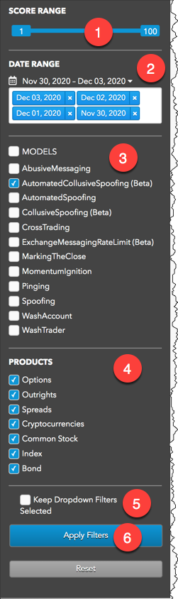
The panel includes the following:
- Score Range: Sets the maximum score of the clusters to include in each view.
- Date Range: Date-based selector to add daily activity data to analyze.
- MODELS: Sets which types of suspect trading patterns to analyze in the data. Check this checkbox to apply all problematic trading models.
TT Score uses the following models to analyze data for problematic trading patterns:
- Abusive Messaging: Quote stuffing schemes designed to introduce predictable latency into an exchange's quoting engine or malfunctioning algorithms that might cause market disruptions.
- Automated Collusive Spoofing: Patterns of manipulative or disruptive trading activity by multiple traders working together to automatically submit a number of orders for which they have no intention of executing in an attempt to move the market.
- Automated Spoofing: Patterns of manipulative or disruptive trading activity that involve the automated placement of a number of orders for which a trader has no intention of executing in an attempt to move the market.
- Collusive Spoofing: Patterns of manipulative or disruptive trading activity by multiple traders working together to place a number of orders for which they have no intention of executing in an attempt to move the market.
- Cross Trading: A cross trade occurs when a buy order and a sell order for the same instrument are entered for different accounts under the same management, such as a broker or portfolio manager.
- Exchange Messaging Rate Limits: Instances where traders exceeded the exchange message rate limit for a set period of time during a trading session.
- Marking the Close: Trading activity intended to manipulate the settlement price of an instrument during its settlement period.
- Momentum Ignition: Behaviors that indicate an attempt to create an artificial price movement with aggressive orders followed by an attempt to capitalize on such movement.
- Pinging: The entry of multiple small orders intended to discover hidden book depth followed by a series of order actions designed to force the large order to trade at less desirable prices.
- Spoofing: Patterns of manipulative or disruptive trading activity that involve the placement of a number of orders for which a trader has no intention of executing in an attempt to move the market.
- Wash Account: The same account ID is both the buyer and seller in the same transaction.
- Wash Trader: The same trader ID is both the buyer and seller in the same transaction.
- Products: Sets one or more of the following product types to include in each view:
- Futures
- Spreads-Strategies
- Equity-Index Options
- Keep Dropdown Filters Selected: Maintains your selected trader, account, instrument, and exchange filters when changing the selected date(s), models, or product types.
- Apply Filters: Applies the selected dates and filters.
Date Range
To begin reviewing trading activity, daily audit logs must be selected by date. These daily logs can be loaded and unloaded to add or remove them from the selected view.
The DATE RANGE section of the Data Selection Panel includes the following:
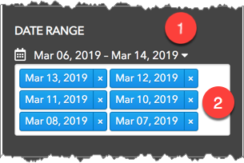
- Date Picker: Date-based selector to add daily activity data into TT Score.
- Selected Dates: Dated logs that are included in the current view.
Using this section of the panel, you can:
Loading daily logs
Use the DATE RANGE section to load activity logs you want TT Score to analyze.
To load daily logs:
-
Click the Date Picker.
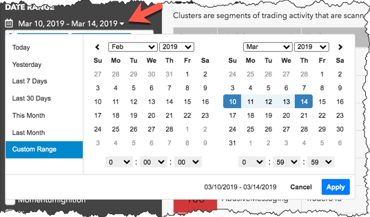
-
Select the dates you would like to to add by doing one of the following:
- Select one of the pre-defined dates or date ranges.
- Click Custom Range and select the desired start and end dates and times (hh:mm:ss).
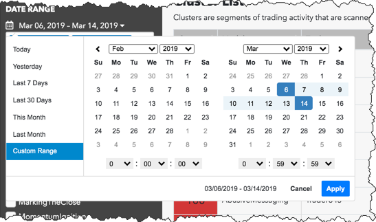
- Click Apply.
The selected logs are displayed in the Date Range section of the Data Selection Panel.
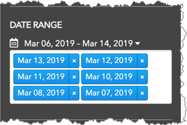
- Click Apply Filters at the bottom of the Date Selection Panel to add the selected dates to the current view.
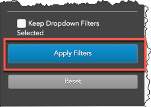
Unload daily logs from the current view
After adding daily logs, you can adjust which days are included in the view by loading or unloading log dates.
To unload a day's activity log:
-
In the DATE RANGE section, click the X in the date you want to remove.
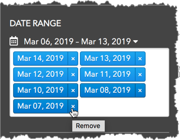
The log is moved below the selected logs in the Date Range section.
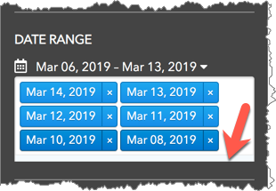
- Click Apply Filters.
The view is updated to reflect the trading activity for the remaining dates.
-
Repeat to unload additional date logs.
Reload daily logs to the current view
To reload a date's activity log:
-
In the DATE RANGE section, click the bottom of the section and select a date.
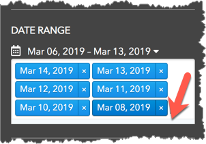
The log is reloaded and included with the selected dates.
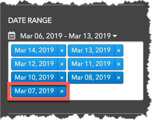
- Click Apply Filters at the bottom of the panel.
The view is updated to reflect the trading activity for the selected date logs.
-
Repeat to reload additional date logs.
Applying filters to selected data
The data that you load into TT Score can be filtered by score range, risk model, and product type as needed.
To apply filters to selected data
:
- Click and drag the slider in the SCORE RANGE section to include or exclude clusters from the view.
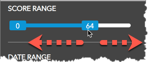
- Check the checkbox of one or more risk models in the MODELS section to apply it to the view.
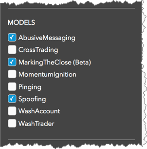
Models that are unchecked are not applied to the data.
- Click a product type in the PRODUCTS section to filter the data for futures, spreads and strategies, or equity-index options instruments.
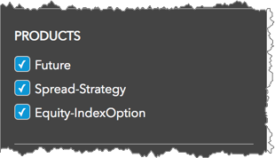